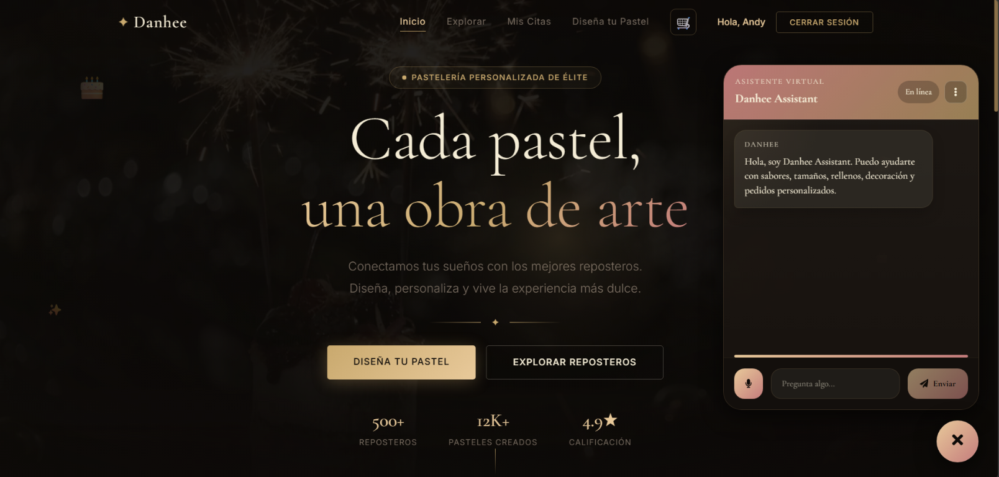

DISPONIBLE PARA PROYECTOS
Frontend y backend
Developer
CREANDO PARA LA WEB_
Transformo ideas en experiencias digitales claras, modernas y fáciles de usar. Diseño y construyo cada detalle con intención.
EmilyDESARROLLADORA
01 / SOBRE MÍ
UN POCO DE CONTEXTO
Convirtiendo ideas
en experiencias.
Soy desarrolladora web y disfruto crear sitios y aplicaciones intuitivos, atractivos y funcionales. Cada proyecto es una oportunidad para aprender, experimentar y cuidar cada detalle.
que domino
explorar
Siempre aprendiendo.
Siempre construyendo.
02 / TRABAJO SELECCIONADO
Mis proyectos.
Una selección de ideas convertidas en experiencias digitales.

Danhee
Plataforma para personalizar pedidos de repostería.
SOFERP / 02MANTENIMIENTO VEHICULAR
Tipo de activo: Vehículos⌄⌕ Buscar vehículo...☷ FILTROS AVANZADOS
VEHÍCULOKM GPSFECHA GPSESTADO
DTM121 / 3.5 SECO25,999 km01/08/2025Próximo
DTM117150,000 kmN/APróximo
Vehículo no encontrado0 kmN/AAl día
Camioneta Peugeot Partner19,875 km31/07/2025Atrasado
SOFERP · Control de mantenimiento
Alertas de servicio vehicular por kilometraje y fecha.
Danhee: más detalles del proyecto próximamente.
03 / HERRAMIENTAS
TECNOLOGÍA QUE UTILIZO
Mis dominios.
Tecnologías y herramientas con las que doy vida a cada proyecto.
HTML
Estructura semántica
JavaScript
Interactividad y lógica
CSS
Estilo y animación
MySQL
Bases de datos
React.js
Interfaces dinámicas
Vue
Interfaces progresivas
Vuetify 2
Componentes para Vue